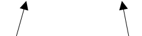

The introduction includes a Terminology section.
Sections 2 and 3 cover SHACL shapes, targets, and Core constraint components.
Section 4 covers SPARQL-based constraints.
The syntax of SHACL is RDF. Examples use Turtle [turtle]. Other RDF serializations such as RDF/XML may be used in practice. The reader should be familiar with basic RDF concepts [rdf11-concepts] such as triples and, for SPARQL-based features of SHACL, with SPARQL [sparql11-query].
SHACL en Forme presents how SHACL is used across public GitHub repositories. It follows the structure and terminology of SHACL 1.0 and adds usage statistics to the relevant sections.
Throughout this document, the following terminology is used.
Terminology that is linked to portions of RDF 1.1 Concepts and Abstract Syntax is used in SHACL as defined there. Terminology that is linked to portions of SPARQL 1.1 Query Language is used in SHACL as defined there. A single linkage is sufficient to provide a definition for all occurences of a particular term in this document.
n has a value v for property p in an RDF graph if there is an RDF triple in the graph with subject n, predicate p,
and object v. The phrase "Every value of P in graph G ..." means "Every object of a triple in G with predicate P ...". (In this document, the verbs specify or declare are sometimes used to express the fact that an RDF term has values for a given predicate in a graph.)
n has value v for
SPARQL property path expression
p in an RDF graph G if there is a solution mapping in the result of the SPARQL query
SELECT ?s ?o WHERE { ?s p' ?o } on G that binds ?s to
n and ?o to v, where p' is SPARQL surface syntax for p.
G is an IRI or a blank node
that is either rdf:nil (provided that rdf:nil has no value
for either rdf:first or rdf:rest), or has exactly one value
for the property rdf:first in G and exactly one value
for the property rdf:rest in G that is also a SHACL list in G,
and the list does not have itself as a value of the property path rdf:rest+ in G.
rdf:nil in an RDF graph G consist of its value for rdf:first in G followed by the members
in G of its value for rdf:rest in G. The SHACL list rdf:nil has no members in any RDF graph.
Sub in an RDF graph is a SHACL subclass of another node Super in the graph if there is a sequence of triples in the graph each with predicate rdfs:subClassOf such that the subject of the first triple is Sub, the object of the last
triple is Super, and the object of each triple except the last is the subject of the next. If Sub is a SHACL subclass of Super in an RDF graph then Super is a SHACL superclass of Sub in the graph.
n in an RDF graph G is a SHACL instance of a SHACL class C in G if one of the SHACL types of n in G is C.
Within this document, the following namespace prefix bindings are used:
| Prefix | Namespace |
|---|---|
rdf: |
http://www.w3.org/1999/02/22-rdf-syntax-ns# |
rdfs: |
http://www.w3.org/2000/01/rdf-schema# |
sh: |
http://www.w3.org/ns/shacl# |
xsd: |
http://www.w3.org/2001/XMLSchema# |
ex: |
http://example.com/ns# |
Note that the URI of the graph defining the SHACL vocabulary itself is equivalent to the namespace above, i.e. it includes the #. References to the SHACL vocabulary, e.g. via owl:imports should include the #.
Throughout the document, color-coded boxes containing RDF graphs in Turtle will appear. These fragments of Turtle documents use the prefix bindings given above.
# This box represents an input shapes graph
# Triples that can be omitted are marked as grey e.g.
<s> <p> <o> .
# This box represents an input data graph. # When highlighting is used in the examples: # Elements highlighted in blue are focus nodes ex:Bob a ex:Person . # Elements highlighted in red are focus nodes that fail validation ex:Alice a ex:Person .
# This box represents an output results graph
SHACL Definitions appear in blue boxes:
# This box contains SPARQL or textual definitions.
Grey boxes such as this include syntax rules that apply to the shapes graph.
true denotes the RDF term "true"^^xsd:boolean.
false denotes the RDF term "false"^^xsd:boolean.
The following introduction is non-normative.
The following informal diagram provides an overview of some of the key classes in the SHACL vocabulary. Each box represents a class. The content of the boxes under the class name lists some of the properties that instances of these classes may have, together
with their value types. The arrows indicate rdfs:subClassOf triples.

The Turtle serialization of the SHACL vocabulary contains the complete SHACL vocabulary.
s that fulfills
at least one of the following conditions in the shapes graph:
s is a SHACL instance of sh:NodeShape or sh:PropertyShape.
s is subject of a triple that has sh:targetClass, sh:targetNode,
sh:targetObjectsOf or sh:targetSubjectsOf as predicate.
s is subject of a triple that has a parameter as predicate.
s is a value of a shape-expecting, non-list-taking parameter such as sh:node, or a member of a SHACL list that is a value of a shape-expecting and list-taking parameter such as sh:or.
Note that the definition above does not include all of the syntax rules of well-formed shapes. Those rules are defined throughout SHACL 1.0 and summarized in its
Appendix B, Summary of SHACL Syntax Rules. For example, shapes that have literals as values for sh:targetClass are ill-formed.
Informally, a shape determines how to validate a focus node based on the values of properties and other characteristics of the focus node. For example, shapes can declare the condition that a focus node be an IRI or that a focus node has a particular value for a property and also a minimum number of values for the property.
The SHACL Core language defines two types of shapes:
sh:Shape is the SHACL superclass of those two shape types in the SHACL vocabulary. Its subclasses sh:NodeShape and sh:PropertyShape can be used as SHACL type of node and property shapes, respectively.
| Distinct explicitly typed shapes | 2,349,381 |
|---|---|
| Explicit NodeShapes | 920,580 |
| Explicit PropertyShapes | 1,430,976 |
2,175 resources are typed as both sh:NodeShape and sh:PropertyShape.
Shapes can declare constraints using the parameters of constraint components.
A constraint component is an IRI. Each constraint component has one or more mandatory parameters, each of which is a property. Each constraint component has zero or more optional parameters, each of which is a property. The parameters of a constraint component are its mandatory parameters plus its optional parameters.
For example, the component sh:MinCountConstraintComponent declares the parameter sh:minCount to represent the restriction that a node has at least a minimum number of values for a particular property.
For a constraint component C with mandatory parameters p1,
... pn, a shape s in a shapes graph SG declares a constraint that has kind C with mandatory parameter values <p1,v1>, ... <pn,vn> in SG when s has vi as a value for pi in SG. For constraint components with optional parameters, the constraint declaration consists
of the values that the shape has for all mandatory and optional parameters of that component.
Some constraint components declare only a single parameter. For example sh:ClassConstraintComponent has the single parameter sh:class. These parameters may be used multiple
times in the same shape, and each value of such a parameter declares an individual constraint.
The interpretation of such declarations is conjunction, i.e. all constraints apply. The following example specifies that the values of ex:customer have to be SHACL instances of both
ex:Customer and ex:Person.
ex:InvoiceShape a sh:NodeShape ; sh:property [ sh:path ex:customer ; sh:class ex:Customer ; sh:class ex:Person ; ] .
Some constraint components such as sh:PatternConstraintComponent declare more than one parameter. Shapes that have more than one value for any of the parameters of such components
are ill-formed.
One way to bypass this syntax rule is to spread the constraints across multiple (property) shapes, as illustrated in the following example.
ex:MultiplePatternsShape a sh:NodeShape ; sh:property [ sh:path ex:name ; sh:pattern "^Start" ; sh:flags "i" ; ] ; sh:property [ sh:path ex:name ; sh:pattern "End$" ; ] .
Constraint components are associated with validators, which provide instructions (for example expressed via SPARQL queries) on how the parameters are used to validate data. Validating an RDF term against a shape involves validating the term against each constraint where the shape has values for all mandatory parameters of the component of the constraint, using the validators associated with the respective component.
The list of constraint components included in SHACL Core is described in section 3. SHACL-SPARQL can be used to declare additional constraint components based on SPARQL.
An RDF term that is validated against a shape using the triples from a data graph is called a focus node.
The remainder of this section is informative.
The set of focus nodes for a shape may be identified as follows:
sh:node)
Target declarations of a shape in a shapes graph are
triples with the shape as the subject and certain properties described in this document (e.g., sh:targetClass) as predicates. Target declarations can be used to produce focus nodes for a shape. The target of a target declaration is the set of RDF terms produced by applying the rules described in the remainder of this section to the data graph.
The target of a shape is the union of all RDF terms produced by the individual
targets that are declared by the shape in the shapes graph.
SHACL Core includes the following kinds of targets: node targets, class-based targets (including implicit class-based targets), subjects-of targets, and objects-of targets.
The remainder of this introduction is informative.
RDF terms produced by targets are not required to exist as nodes in the data graph. Targets of a shape are ignored whenever a focus node is provided directly as
input to the validation process for that shape. This includes the cases where the shape is a value of one of the
shape-expecting constraint parameters (such as sh:node) and a focus node is determined during the validation of the corresponding
constraint component (such as sh:NodeConstraintComponent). In such cases, the provided focus node does not need to be in the target of the shape.
A node target is specified using the sh:targetNode predicate.
Each value of sh:targetNode in a shape is either an IRI or a literal.
s is a shape in a shapes graph SG and s has
value t for sh:targetNode in SG then { t } is a target from any data graph for s in SG.
The remainder of this section is informative.
With the example data below, only ex:Alice is the target of the provided shape:
ex:PersonShape a sh:NodeShape ; sh:targetNode ex:Alice .
ex:Alice a ex:Person .
ex:Bob a ex:Person .
The following query expresses a potential definition of node targets in SPARQL. The variable targetNode will be pre-bound to the given value of sh:targetNode. All bindings of the variable this from the solution become focus nodes.
SELECT DISTINCT ?this # ?this is the focus node WHERE { BIND ($targetNode AS ?this) # $targetNode is pre-bound to ex:Alice }
| Unique Git trees | 886 / 6,336 |
|---|---|
| Tree prevalence | 13.98% |
| Occurrences | 132,943 |
A class target is specified with the sh:targetClass predicate.
Each value of sh:targetClass in a shape is an IRI.
s is a shape in a shapes graph SG and s has value c for
sh:targetClass in SG then the set of SHACL instances of c in a data graph
DG is a target from DG for s in SG.
The remainder of this section is informative.
ex:PersonShape a sh:NodeShape ; sh:targetClass ex:Person .
ex:Alice a ex:Person . ex:Bob a ex:Person . ex:NewYork a ex:Place .
In this example, only ex:Alice and ex:Bob are focus nodes. Note that, according to the SHACL instance definition, all the rdfs:subClassOf declarations needed to walk the class hierarchy need to exist in the data graph. However, the ex:Person a rdfs:Class triple is not required to
exist in either graphs.
In the following example, the selected focus node is only ex:Who.
ex:Doctor rdfs:subClassOf ex:Person .
ex:Who a ex:Doctor .
ex:House a ex:Nephrologist .
The following query expresses a potential definition of class targets in SPARQL. The variable targetClass will be pre-bound to the given value of sh:targetClass. All bindings of the variable this from the solutions become focus nodes.
SELECT DISTINCT ?this # ?this is the focus node WHERE { ?this rdf:type/rdfs:subClassOf* $targetClass . # $targetClass is pre-bound to ex:Person }
| Unique Git trees | 5,849 / 6,336 |
|---|---|
| Tree prevalence | 92.31% |
| Occurrences | 1,297,648 |
Informally, if a shape is also declared to be a class in the shapes graph then all SHACL instances of this class are a target for the shape.
If s is a SHACL instance of sh:NodeShape or sh:PropertyShape in an RDF graph G and s is
also a SHACL instance of
rdfs:Class in G and s is not an IRI then s is an ill-formed shape in G.
s is a SHACL instance of sh:NodeShape or sh:PropertyShape in a shapes graph SG and s is also a SHACL instance of rdfs:Class in SG then the
set of SHACL instances of s in a data graph DG is a target from DG for s in SG.
The remainder of this section is informative.
In the following example, ex:Alice is a focus node, because it is a SHACL instance of
ex:Person which is both a class and a shape in the shapes graph.
ex:Person a rdfs:Class, sh:NodeShape .
ex:Alice a ex:Person .
ex:NewYork a ex:Place .
A subjects-of target is specified with the predicate sh:targetSubjectsOf.
The values of sh:targetSubjectsOf in a shape are IRIs.
s is a shape in a shapes graph SG and s has value
p for sh:targetSubjectsOf in SG then the set of nodes in a data graph DG that are subjects of triples in DG with predicate
p is a target from DG for s in SG.
The remainder of this section is informative.
ex:TargetSubjectsOfExampleShape a sh:NodeShape ; sh:targetSubjectsOf ex:knows .
ex:Alice ex:knows ex:Bob .
ex:Bob ex:livesIn ex:NewYork .
In the example above, only ex:Alice is validated against the given shape, because it is the subject of a triple that has ex:knows as its predicate.
The following query expresses a potential definition of subjects-of targets in SPARQL. The variable targetSubjectsOf will be pre-bound to the given value of sh:targetSubjectsOf.
All bindings of the variable this from the solutions become focus nodes.
SELECT DISTINCT ?this # ?this is the focus node WHERE { ?this $targetSubjectsOf ?any . # $targetSubjectsOf is pre-bound to ex:knows }
| Unique Git trees | 1,539 / 6,336 |
|---|---|
| Tree prevalence | 24.29% |
| Occurrences | 79,331 |
An objects-of target is specified with the predicate sh:targetObjectsOf.
The values of sh:targetObjectsOf in a shape are IRIs.
s is a shape in a shapes graph SG and s has value
p for sh:targetObjectsOf in SG then the set of nodes in a data graph DG that are objects of triples in DG with predicate
p is a target from DG for s in SG.
The remainder of this section is informative.
ex:TargetObjectsOfExampleShape a sh:NodeShape ; sh:targetObjectsOf ex:knows .
ex:Alice ex:knows ex:Bob .
ex:Bob ex:livesIn ex:NewYork .
In the example above, only ex:Bob is validated against the given shape, because it is the object of a triple that has ex:knows as its predicate.
The following query expresses a potential definition of objects-of targets in SPARQL. The variable targetObjectsOf will be pre-bound to the given value of sh:targetObjectsOf.
All bindings of the variable this from the solutions become focus nodes.
SELECT DISTINCT ?this # ?this is the focus node WHERE { ?any $targetObjectsOf ?this . # $targetObjectsOf is pre-bound to ex:knows }
| Unique Git trees | 1,298 / 6,336 |
|---|---|
| Tree prevalence | 20.49% |
| Occurrences | 32,371 |
A node shape is a shape in the shapes graph that
is not the subject of a triple with sh:path as its predicate. It is recommended, but not required, for a node shape to be declared as a SHACL instance of sh:NodeShape.
SHACL instances of sh:NodeShape cannot have a value for the property sh:path.
Informally, node shapes specify constraints that need to be met with respect to focus nodes. In contrast to property shapes they primarily apply to the focus node itself, not to its property values.
| Explicit NodeShapes | 920,580 |
|---|
A property shape is a shape in the shapes graph
that is the subject of a triple that has sh:path as its predicate.
A shape has at most one value for sh:path.
Each value of sh:path in a shape must be a well-formed SHACL property path. It is recommended, but not required, for a property shape to be declared as a SHACL instance of sh:PropertyShape.
SHACL instances of sh:PropertyShape have one value for the property sh:path.
Informally, property shapes specify constraints that need to be met with respect to nodes that can be reached from the
focus node either by directly following a given property (specified as an IRI) or any other SHACL property path, specified using sh:path.
Note that the definitions of well-formed property shapes and node shapes make these two sets of nodes disjoint.
The following example illustrates some syntax variations of property shapes.
ex:ExampleNodeShapeWithPropertyShapes a sh:NodeShape ; sh:property [ sh:path ex:email ; sh:name "e-mail" ; sh:description "We need at least one email value" ; sh:minCount 1 ; ] ; sh:property [ sh:path (ex:knows ex:email) ; sh:name "Friend's e-mail" ; sh:description "We need at least one email for everyone you know" ; sh:minCount 1 ; ] . ex:ExamplePropertyShape a sh:PropertyShape ; sh:path ex:email ; sh:description "We need at least one email value" ; sh:minCount 1 .
| Explicit PropertyShapes | 1,430,976 |
|---|
SHACL includes RDF terms to represent the following subset of SPARQL property paths:
PredicatePath, InversePath, SequencePath, AlternativePath,
ZeroOrMorePath, OneOrMorePath and ZeroOrOnePath.
The syntax rules for well-formed SHACL property paths and their mapping to SPARQL 1.1 property paths are defined in the SHACL 1.0 Recommendation. These rules define the path mapping path(p,G) in an RDF graph G of an RDF term p that is a SHACL property path in G. Two SHACL property paths are considered equivalent paths when they
map to the exact same SPARQL property paths.
A node in an RDF graph is a well-formed SHACL property path p if it satisfies one of the property path syntax rules defined in SHACL 1.0.
A node p is not a well-formed SHACL property path if p is a blank node and any path mappings of p directly or transitively reference p.
The following example illustrates some valid SHACL property paths, together with their SPARQL 1.1 equivalents.
SPARQL Property path: ex:parent SHACL Property path: ex:parent SPARQL Property path: ^ex:parent SHACL Property path: [ sh:inversePath ex:parent ] SPARQL Property path: ex:parent/ex:firstName SHACL Property path: ( ex:parent ex:firstName ) SPARQL Property path: rdf:type/rdfs:subClassOf* SHACL Property path: ( rdf:type [ sh:zeroOrMorePath rdfs:subClassOf ] ) SPARQL Property path: ex:father|ex:mother SHACL Property path: [ sh:alternativePath ( ex:father ex:mother ) ]
| Path form | Unique Git trees | Tree prevalence | Occurrences |
|---|---|---|---|
PredicatePath |
6,108 / 6,336 | 96.40% | 4,568,036 |
SequencePath |
1,245 / 6,336 | 19.65% | 180,487 |
AlternativePath |
1,057 / 6,336 | 16.68% | 16,243 |
InversePath |
1,298 / 6,336 | 20.49% | 34,461 |
ZeroOrMorePath |
853 / 6,336 | 13.46% | 49,261 |
OneOrMorePath |
703 / 6,336 | 11.10% | 2,155 |
ZeroOrOnePath |
443 / 6,336 | 6.99% | 754 |
SHACL 1.0 defines the built-in SHACL Core constraint components that MUST be supported by all SHACL Core processors. The definition of each constraint component contains its IRI as well as a table of its parameters. Unless stated otherwise, all these parameters are mandatory parameters. Shapes that violate any of the syntax rules enumerated in those parameter tables are ill-formed.
Each constraint component also includes a textual definition, which describes the validator associated with the component. These textual definitions refer to the values
of the parameters in the constraint by variables of the form
$paramName where paramName is the part of the parameter's IRI after the sh: namespace. For example, the textual definition of sh:ClassConstraintComponent refers to the value of
sh:class using the variable $class. Note that these validators define the only validation results that are being produced by the component. Furthermore, the validators always produce new result nodes,
i.e. when the textual definition states that "...there is a validation result..." then this refers to a distinct new node in a results graph.
The remainder of this section is informative.
The choice of constraint components that were included into the SHACL Core was made based on the requirements collected by the [shacl-ucr] document. Special attention was paid to the balance between trying to cover as many common use cases as possible and keeping the size of the Core language manageable. Not all use cases can be expressed by the Core language alone. Instead, SHACL-SPARQL provides an extension mechanism for additional constraint components. It is expected that additional reusable libraries of constraint components will be maintained by third parties.
Unless stated otherwise, the Core constraint components can be used both in property shapes and node shapes.
Some constraint parameters have syntax rules attached to them that would make node shapes that use these parameters ill-formed.
Examples of this include sh:minCount which is only supported for property shapes.
The SPARQL definitions in this section represent potential validators. They are included for illustration purposes only and have no formal status otherwise. Many constraint components are written
as SPARQL ASK queries. These queries are interpreted against each value node, bound to the variable value. If an ASK query does not evaluate to true for a value node, then there is a validation result based on the rules outlined in the
section on ASK-based validators. Constraint components that are described using a SELECT query are interpreted based on the rules outlined in the section on SELECT-based validators. In particular, for
property shapes, the variable PATH is substituted with a path expression based
on the value of sh:path in the shape. All SPARQL queries also require the variable bindings and result variable mapping rules detailed in the
section on SPARQL-based Constraints. The variable this represents the currently validated focus node. Based on the parameter
IRIs on the tables, pre-bound variables are derived using the syntax rules for parameter names.
The constraint components in this section have in common that they can be used to restrict the type of value nodes. Note that it is possible to represent multiple value type alternatives using sh:or.
The condition specified by sh:class is that each value node is a SHACL instance of a given type.
Constraint Component IRI: sh:ClassConstraintComponent
| Property | Summary and Syntax Rules |
|---|---|
sh:class |
The type of all value nodes.
The values of sh:class in a shape are IRIs.
|
$class in the data graph, there is a validation result with the value node as sh:value.
The remainder of this section is informative.
Note that multiple values for sh:class are interpreted as a conjunction, i.e. the values need to be SHACL instances of all of them.
ASK {
$value rdf:type/rdfs:subClassOf* $class .
}
ex:ClassExampleShape
a sh:NodeShape ;
sh:targetNode ex:Bob, ex:Alice, ex:Carol ;
sh:property [
sh:path ex:address ;
sh:class ex:PostalAddress ;
] .
ex:Alice a ex:Person .
ex:Bob ex:address [ a ex:PostalAddress ; ex:city ex:Berlin ] .
ex:Carol ex:address [ ex:city ex:Cairo ] .
| Unique Git trees | 4,633 / 6,336 |
|---|---|
| Tree prevalence | 73.12% |
| Occurrences | 1,755,137 |
sh:datatype specifies a condition to be satisfied with regards to the datatype of each value node.
Constraint Component IRI: sh:DatatypeConstraintComponent
| Property | Summary and Syntax Rules |
|---|---|
sh:datatype |
The datatype of all value nodes (e.g., xsd:integer).
The values of sh:datatype in a shape are IRIs.
A shape has at most one value for sh:datatype.
|
$datatype, there is a validation result with the value node as sh:value. The datatype of a literal is determined following the datatype function of SPARQL
1.1. A literal matches a datatype if the literal's datatype has the same IRI and, for the datatypes supported by SPARQL 1.1, is not an ill-typed literal.
The remainder of this section is informative.
The values of sh:datatype are typically datatypes, such as xsd:string. Note that using rdf:langString as value of sh:datatype can be used to test if value nodes have a language tag.
ex:DatatypeExampleShape
a sh:NodeShape ;
sh:targetNode ex:Alice, ex:Bob, ex:Carol ;
sh:property [
sh:path ex:age ;
sh:datatype xsd:integer ;
] .
ex:Alice ex:age "23"^^xsd:integer . ex:Bob ex:age "twenty two" . ex:Carol ex:age "23"^^xsd:int .
| Unique Git trees | 5,349 / 6,336 |
|---|---|
| Tree prevalence | 84.42% |
| Occurrences | 1,475,255 |
sh:nodeKind specifies a condition to be satisfied by the RDF node kind of each value node.
Constraint Component IRI: sh:NodeKindConstraintComponent
| Property | Summary and Syntax Rules |
|---|---|
sh:nodeKind |
The node kind (IRI, blank node, literal or combinations of these) of all value nodes.
The values of sh:nodeKind in a shape are one of the following six instances of the class sh:NodeKind:
sh:BlankNode, sh:IRI, sh:Literal
sh:BlankNodeOrIRI, sh:BlankNodeOrLiteral and sh:IRIOrLiteral.
A shape has at most one value for sh:nodeKind.
|
$nodeKind, there is a validation result with the value node as sh:value. Any IRI matches only sh:IRI, sh:BlankNodeOrIRI and sh:IRIOrLiteral. Any blank node matches only sh:BlankNode, sh:BlankNodeOrIRI and sh:BlankNodeOrLiteral.
Any literal matches only sh:Literal, sh:BlankNodeOrLiteral and sh:IRIOrLiteral.
The remainder of this section is informative.
ASK {
FILTER ((isIRI($value) && $nodeKind IN ( sh:IRI, sh:BlankNodeOrIRI, sh:IRIOrLiteral ) ) ||
(isLiteral($value) && $nodeKind IN ( sh:Literal, sh:BlankNodeOrLiteral, sh:IRIOrLiteral ) ) ||
(isBlank($value) && $nodeKind IN ( sh:BlankNode, sh:BlankNodeOrIRI, sh:BlankNodeOrLiteral ) )) .
}
The following example states that all values of ex:knows need to be IRIs, at any subject.
ex:NodeKindExampleShape
a sh:NodeShape ;
sh:targetObjectsOf ex:knows ;
sh:nodeKind sh:IRI .
ex:Bob ex:knows ex:Alice .
ex:Alice ex:knows "Bob" .
| Unique Git trees | 3,515 / 6,336 |
|---|---|
| Tree prevalence | 55.48% |
| Occurrences | 1,397,429 |
The following constraint components represent restrictions on the number of value nodes for the given focus node.
sh:minCount specifies the minimum number of value nodes that satisfy the condition. If the minimum cardinality value is 0 then this constraint is
always satisfied and so may be omitted.
Constraint Component IRI: sh:MinCountConstraintComponent
| Property | Summary and Syntax Rules |
|---|---|
sh:minCount |
The minimum cardinality.
Node shapes cannot have any value for sh:minCount.
A property shape has at most one value for sh:minCount.
The values of sh:minCount in a property shape are literals with datatype xsd:integer.
|
The remainder of this section is informative.
ex:MinCountExampleShape
a sh:PropertyShape ;
sh:targetNode ex:Alice, ex:Bob ;
sh:path ex:name ;
sh:minCount 1 .
ex:Alice ex:name "Alice" .
ex:Bob ex:givenName "Bob"@en .
| Unique Git trees | 5,662 / 6,336 |
|---|---|
| Tree prevalence | 89.36% |
| Occurrences | 1,267,604 |
sh:maxCount specifies the maximum number of value nodes that satisfy the condition.
Constraint Component IRI: sh:MaxCountConstraintComponent
| Property | Summary and Syntax Rules |
|---|---|
sh:maxCount |
The maximum cardinality.
Node shapes cannot have any value for sh:maxCount.
A property shape has at most one value for sh:maxCount.
The values of sh:maxCount in a property shape are literals with datatype xsd:integer.
|
The remainder of this section is informative.
ex:MaxCountExampleShape
a sh:NodeShape ;
sh:targetNode ex:Bob ;
sh:property [
sh:path ex:birthDate ;
sh:maxCount 1 ;
] .
ex:Bob ex:birthDate "May 5th 1990" .
| Unique Git trees | 5,221 / 6,336 |
|---|---|
| Tree prevalence | 82.40% |
| Occurrences | 1,605,102 |
The following constraint components specify value range conditions to be satisfied by value nodes that are comparable via operators such as <, <=, > and >=. The following
example illustrates a typical use case of these constraint components.
ex:NumericRangeExampleShape
a sh:NodeShape ;
sh:targetNode ex:Bob, ex:Alice, ex:Ted ;
sh:property [
sh:path ex:age ;
sh:minInclusive 0 ;
sh:maxInclusive 150 ;
] .
ex:Bob ex:age 23 . ex:Alice ex:age 220 . ex:Ted ex:age "twenty one" .
Constraint Component IRI: sh:MinExclusiveConstraintComponent
| Property | Summary and Syntax Rules |
|---|---|
sh:minExclusive |
The minimum exclusive value.
The values of sh:minExclusive in a shape are literals.
A shape has at most one value for sh:minExclusive.
|
v where the SPARQL expression $minExclusive < v does not return true, there is a validation result with v as sh:value.
The remainder of this section is informative.
The SPARQL expression produces an error if the value node cannot be compared to the specified range, for example when someone compares a string with an integer. If the comparison cannot be performed, then there is a validation result. This is different from, say, a plain SPARQL query, in which such errors would silently not lead to any results.
ASK {
FILTER ($minExclusive < $value)
}
| Unique Git trees | 882 / 6,336 |
|---|---|
| Tree prevalence | 13.92% |
| Occurrences | 18,086 |
Constraint Component IRI: sh:MinInclusiveConstraintComponent
| Property | Summary and Syntax Rules |
|---|---|
sh:minInclusive |
The minimum inclusive value.
The values of sh:minInclusive in a shape are literals.
A shape has at most one value for sh:minInclusive.
|
v where the SPARQL expression $minInclusive <= v does not return true, there is a validation result with v as sh:value.
The remainder of this section is informative.
ASK {
FILTER ($minInclusive <= $value)
}
| Unique Git trees | 2,412 / 6,336 |
|---|---|
| Tree prevalence | 38.07% |
| Occurrences | 64,759 |
Constraint Component IRI: sh:MaxExclusiveConstraintComponent
| Property | Summary and Syntax Rules |
|---|---|
sh:maxExclusive |
The maximum exclusive value.
The values of sh:maxExclusive in a shape are literals.
A shape has at most one value for sh:maxExclusive.
|
v where the SPARQL expression $maxExclusive > v does not return true, there is a validation result with v as sh:value.
The remainder of this section is informative.
ASK {
FILTER ($maxExclusive > $value)
}
| Unique Git trees | 621 / 6,336 |
|---|---|
| Tree prevalence | 9.80% |
| Occurrences | 5,116 |
Constraint Component IRI: sh:MaxInclusiveConstraintComponent
| Property | Summary and Syntax Rules |
|---|---|
sh:maxInclusive |
The maximum inclusive value.
The values of sh:maxInclusive in a shape are literals.
A shape has at most one value for sh:maxInclusive.
|
v where the SPARQL expression $maxInclusive >= v does not return true, there is a validation result with v as sh:value.
The remainder of this section is informative.
ASK {
FILTER ($maxInclusive >= $value)
}
| Unique Git trees | 2,170 / 6,336 |
|---|---|
| Tree prevalence | 34.25% |
| Occurrences | 25,744 |
The constraint components in this section have in common that they specify conditions on the string representation of value nodes.
sh:minLength specifies the minimum string length of each value node that satisfies the condition. This can be applied to any literals and IRIs, but not to blank nodes.
Constraint Component IRI: sh:MinLengthConstraintComponent
| Property | Summary and Syntax Rules |
|---|---|
sh:minLength |
The minimum length.
The values of sh:minLength in a shape are literals with datatype xsd:integer.
A shape has at most one value for sh:minLength.
|
v where the length (as defined by the SPARQL STRLEN function)
of the string representation of v (as defined by the SPARQL str function) is less than $minLength, or where v is a blank node, there is a validation result with v as sh:value.
The remainder of this section is informative.
Note that if the value of sh:minLength is 0 then there is no restriction on the string length but the constraint is still violated if the value node is a blank node.
ASK {
FILTER (STRLEN(str($value)) >= $minLength) .
}
| Unique Git trees | 1,398 / 6,336 |
|---|---|
| Tree prevalence | 22.06% |
| Occurrences | 15,682 |
sh:maxLength specifies the maximum string length of each value node that satisfies the condition. This can be applied to any literals and IRIs, but not to blank nodes.
Constraint Component IRI: sh:MaxLengthConstraintComponent
| Property | Summary and Syntax Rules |
|---|---|
sh:maxLength |
The maximum length.
The values of sh:maxLength in a shape are literals with datatype xsd:integer.
A shape has at most one value for sh:maxLength.
|
v where the length (as defined by the SPARQL STRLEN function)
of the string representation of v (as defined by the SPARQL str function) is greater than $maxLength, or where v is a blank node, there is a validation result with v as sh:value.
The remainder of this section is informative.
ASK {
FILTER (STRLEN(str($value)) <= $maxLength) .
}
ex:PasswordExampleShape
a sh:NodeShape ;
sh:targetNode ex:Bob, ex:Alice ;
sh:property [
sh:path ex:password ;
sh:minLength 8 ;
sh:maxLength 10 ;
] .
ex:Bob ex:password "123456789" .
ex:Alice ex:password "1234567890ABC" .
| Unique Git trees | 938 / 6,336 |
|---|---|
| Tree prevalence | 14.80% |
| Occurrences | 18,030 |
sh:pattern specifies a regular expression that each value node matches to satisfy the condition.
Constraint Component IRI: sh:PatternConstraintComponent
| Property | Summary and Syntax Rules |
|---|---|
sh:pattern |
A regular expression that all value nodes need to match.
The values of sh:pattern in a shape are literals with datatype xsd:string.
The values of sh:pattern in a shape are valid pattern arguments for the SPARQL REGEX function.
|
sh:flags |
An optional string of flags, interpreted as in SPARQL 1.1 REGEX.
The values of sh:flags in a shape are literals with datatype xsd:string.
|
$pattern (as defined by the SPARQL REGEX function), there is a validation result with the value node as sh:value. If $flags has a value then the matching MUST follow the definition of the 3-argument variant of the SPARQL REGEX function, using $flags as third argument.
The remainder of this section is informative.
ASK {
FILTER (!isBlank($value) && IF(bound($flags), regex(str($value), $pattern, $flags), regex(str($value), $pattern)))
}
ex:PatternExampleShape
a sh:NodeShape ;
sh:targetNode ex:Bob, ex:Alice, ex:Carol ;
sh:property [
sh:path ex:bCode ;
sh:pattern "^B" ; # starts with 'B'
sh:flags "i" ; # Ignore case
] .
ex:Bob ex:bCode "b101" .
ex:Alice ex:bCode "B102" .
ex:Carol ex:bCode "C103" .
sh:pattern| Unique Git trees | 2,932 / 6,336 |
|---|---|
| Tree prevalence | 46.28% |
| Occurrences | 185,857 |
sh:flags| Unique Git trees | 565 / 6,336 |
|---|---|
| Tree prevalence | 8.92% |
| Occurrences | 21,572 |
The condition specified by sh:languageIn is that the allowed language tags for each value node are limited by a given list of language tags.
Constraint Component IRI: sh:LanguageInConstraintComponent
| Property | Summary and Syntax Rules |
|---|---|
sh:languageIn |
A list of basic language ranges as per [BCP47].
Each value of sh:languageIn in a shape is a SHACL list.
Each member of such a list is a literal with datatype xsd:string.
A shape has at most one value for sh:languageIn.
|
$languageIn following the filtering schema defined by the SPARQL langMatches function, there is a validation result with the value node as sh:value.
The remainder of this section is informative.
The following example shape states that all values of ex:prefLabel can be either in English or Māori.
ex:NewZealandLanguagesShape
a sh:NodeShape ;
sh:targetNode ex:Mountain, ex:Berg ;
sh:property [
sh:path ex:prefLabel ;
sh:languageIn ( "en" "mi" ) ;
] .
From the example instances, ex:Berg will lead to constraint violations for all of its labels.
ex:Mountain
ex:prefLabel "Mountain"@en ;
ex:prefLabel "Hill"@en-NZ ;
ex:prefLabel "Maunga"@mi .
ex:Berg
ex:prefLabel "Berg" ;
ex:prefLabel "Berg"@de ;
ex:prefLabel ex:BergLabel .
| Unique Git trees | 733 / 6,336 |
|---|---|
| Tree prevalence | 11.57% |
| Occurrences | 6,178 |
The property sh:uniqueLang can be set to true to specify that no pair of value nodes may use the same language tag.
Constraint Component IRI: sh:UniqueLangConstraintComponent
| Property | Summary and Syntax Rules |
|---|---|
sh:uniqueLang |
true to activate this constraint.
The values of sh:uniqueLang in a shape are literals with datatype xsd:boolean.
A property shape has at most one value for sh:uniqueLang.
Node shapes cannot have any value for sh:uniqueLang.
|
$uniqueLang is true then for each non-empty language tag that is used by at least two value nodes, there is a validation result.
The remainder of this section is informative.
ex:UniqueLangExampleShape
a sh:NodeShape ;
sh:targetNode ex:Alice, ex:Bob ;
sh:property [
sh:path ex:label ;
sh:uniqueLang true ;
] .
ex:Alice
ex:label "Alice" ;
ex:label "Alice"@en ;
ex:label "Alice"@fr .
ex:Bob
ex:label "Bob"@en ;
ex:label "Bobby"@en .
| Unique Git trees | 940 / 6,336 |
|---|---|
| Tree prevalence | 14.84% |
| Occurrences | 10,870 |
The constraint components in this section specify conditions on the sets of value nodes in relation to other properties. These constraint components can only be used by property shapes.
sh:equals specifies the condition that the set of all value nodes is equal to the set of objects of the triples that have the focus node as subject and the value of sh:equals as predicate.
Constraint Component IRI: sh:EqualsConstraintComponent
| Property | Summary and Syntax Rules |
|---|---|
sh:equals |
The property to compare with.
The values of sh:equals in a shape are IRIs.
|
$equals at
the focus node, there is a validation result with the value node as sh:value. For each value of the property $equals at the focus node that is not one of the value nodes, there is a validation result with the value as sh:value.
The remainder of this section is informative.
The following example illustrates the use of sh:equals in a shape to specify that certain focus nodes need to have the same set of values for ex:firstName and ex:givenName.
ex:EqualExampleShape
a sh:NodeShape ;
sh:targetNode ex:Bob ;
sh:property [
sh:path ex:firstName ;
sh:equals ex:givenName ;
] .
ex:Bob ex:firstName "Bob" ; ex:givenName "Bob" .
| Unique Git trees | 549 / 6,336 |
|---|---|
| Tree prevalence | 8.66% |
| Occurrences | 10,987 |
sh:disjoint specifies the condition that the set of value nodes is disjoint with the set of objects of the triples that have the focus node as subject and the value of sh:disjoint as predicate.
Constraint Component IRI: sh:DisjointConstraintComponent
| Property | Summary and Syntax Rules |
|---|---|
sh:disjoint |
The property to compare the values with.
The values of sh:disjoint in a shape are IRIs.
|
$disjoint at
the focus node, there is a validation result with the value node as sh:value.
The remainder of this section is informative.
SELECT DISTINCT $this ?value
WHERE {
$this $PATH ?value .
$this $disjoint ?value .
}
The following example illustrates the use of sh:disjoint in a shape to specify that certain focus nodes cannot share any values for ex:prefLabel and ex:altLabel.
ex:DisjointExampleShape
a sh:NodeShape ;
sh:targetNode ex:USA, ex:Germany ;
sh:property [
sh:path ex:prefLabel ;
sh:disjoint ex:altLabel ;
] .
ex:USA
ex:prefLabel "USA" ;
ex:altLabel "United States" .
ex:Germany
ex:prefLabel "Germany" ;
ex:altLabel "Germany" .
| Unique Git trees | 619 / 6,336 |
|---|---|
| Tree prevalence | 9.77% |
| Occurrences | 3,625 |
sh:lessThan specifies the condition that each value node is smaller than all the objects of the triples that have the focus node as subject and the value of sh:lessThan as predicate.
Constraint Component IRI: sh:LessThanConstraintComponent
| Property | Summary and Syntax Rules |
|---|---|
sh:lessThan |
The property to compare the values with.
The values of sh:lessThan in a shape are IRIs.
Node shapes cannot have any value for sh:lessThan.
|
$lessThan at the given focus node where the first value is not less than the second value (based on SPARQL's < operator)
or where the two values cannot be compared, there is a validation result with the value node as sh:value.
The remainder of this section is informative.
SELECT $this ?value
WHERE {
$this $PATH ?value .
$this $lessThan ?otherValue .
BIND (?value < ?otherValue AS ?result) .
FILTER (!bound(?result) || !(?result)) .
}
The following example illustrates the use of sh:lessThan in a shape to specify that all values of ex:startDate are "before" the values of ex:endDate.
ex:LessThanExampleShape a sh:NodeShape ; sh:property [ sh:path ex:startDate ; sh:lessThan ex:endDate ; ] .
| Unique Git trees | 588 / 6,336 |
|---|---|
| Tree prevalence | 9.28% |
| Occurrences | 6,233 |
sh:lessThanOrEquals specifies the condition that each value node is smaller than or equal to all the objects of the triples that have the focus node as subject and the value of sh:lessThanOrEquals as predicate.
Constraint Component IRI: sh:LessThanOrEqualsConstraintComponent
| Property | Summary and Syntax Rules |
|---|---|
sh:lessThanOrEquals |
The property to compare the values with.
The values of sh:lessThanOrEquals in a shape are IRIs.
Node shapes cannot have any value for sh:lessThanOrEquals.
|
$lessThanOrEquals at the given focus node where the first value is not less than or equal to the second value (based on SPARQL's <= operator) or where the two values cannot be compared, there is a validation result with the value node as sh:value.
The remainder of this section is informative.
SELECT $this ?value
WHERE {
$this $PATH ?value .
$this $lessThan ?otherValue .
BIND (?value <= ?otherValue AS ?result) .
FILTER (!bound(?result) || !(?result)) .
}
| Unique Git trees | 533 / 6,336 |
|---|---|
| Tree prevalence | 8.41% |
| Occurrences | 1,696 |
The constraint components in this section implement the common logical operators and, or and not, as well as a variation of exclusive or.
sh:not specifies the condition that each value node cannot conform to a given
shape. This is comparable to negation and the logical "not" operator.
Constraint Component IRI: sh:NotConstraintComponent
| Property | Summary and Syntax Rules |
|---|---|
sh:not |
The shape to negate.
The values of sh:not in a shape must be well-formed shapes.
|
v: A failure MUST be reported if the conformance checking of v against the shape $not produces a failure. Otherwise, if v conforms to the shape $not, there is validation result with v as sh:value.
The remainder of this section is informative.
The following example illustrates the use of sh:not in a shape to specify the condition that certain focus nodes cannot have any value of ex:property.
ex:NotExampleShape
a sh:NodeShape ;
sh:targetNode ex:InvalidInstance1 ;
sh:not [
a sh:PropertyShape ;
sh:path ex:property ;
sh:minCount 1 ;
] .
ex:InvalidInstance1 ex:property "Some value" .
| Unique Git trees | 1,404 / 6,336 |
|---|---|
| Tree prevalence | 22.16% |
| Occurrences | 76,921 |
sh:and specifies the condition that each value node conforms to all provided shapes. This is comparable to conjunction and the logical "and" operator.
Constraint Component IRI: sh:AndConstraintComponent
| Property | Summary and Syntax Rules |
|---|---|
sh:and |
A SHACL list of shapes to validate the value nodes against.
Each value of sh:and in a shape is a SHACL list.
Each member of such list must be a well-formed shape.
|
v: A failure MUST be produced if the conformance checking of v against any of the members of $and produces a failure. Otherwise, if v does not conform to
each member of $and, there is a validation result with v as sh:value.
The remainder of this section is informative.
Note that although sh:and has a SHACL list of shapes as its value, the order of those shapes does not impact the validation results.
The following example illustrates the use of sh:and in a shape to specify the condition that certain focus nodes have exactly one value of ex:property. This is achieved via the conjunction of a separate named
shape (ex:SuperShape) which specifies the minimum count, and a blank node shape that additionally specifies the maximum count. As shown here, sh:and can be used to implement a specialization mechanism between
shapes.
ex:SuperShape
a sh:NodeShape ;
sh:property [
sh:path ex:property ;
sh:minCount 1 ;
] .
ex:ExampleAndShape
a sh:NodeShape ;
sh:targetNode ex:ValidInstance, ex:InvalidInstance ;
sh:and (
ex:SuperShape
[
sh:path ex:property ;
sh:maxCount 1 ;
]
) .
ex:ValidInstance
ex:property "One" .
# Invalid: more than one property
ex:InvalidInstance
ex:property "One" ;
ex:property "Two" .
| Unique Git trees | 938 / 6,336 |
|---|---|
| Tree prevalence | 14.80% |
| Occurrences | 65,679 |
sh:or specifies the condition that each value node conforms to at least one of the provided shapes. This is comparable to disjunction and the logical
"or" operator.
Constraint Component IRI: sh:OrConstraintComponent
| Property | Summary and Syntax Rules |
|---|---|
sh:or |
A SHACL list of shapes to validate the value nodes against.
Each value of sh:or in a shape is a SHACL list.
Each member of such list must be a well-formed shape.
|
v: A failure MUST be produced if the conformance checking of v against any of the members produces a failure. Otherwise, if v conforms to none of the members of $or there is a validation result with v as sh:value.
The remainder of this section is informative.
Note that although sh:or has a SHACL list of shapes as its value, the order of those shapes does not impact the validation results.
The following example illustrates the use of sh:or in a shape to specify the condition that certain focus nodes have at least one value of ex:firstName or at least one value of ex:givenName.
ex:OrConstraintExampleShape
a sh:NodeShape ;
sh:targetNode ex:Bob ;
sh:or (
[
sh:path ex:firstName ;
sh:minCount 1 ;
]
[
sh:path ex:givenName ;
sh:minCount 1 ;
]
) .
ex:Bob ex:firstName "Robert" .
The next example shows how sh:or can be used in a property shape to state that the values of the given property ex:address may be
either literals with datatype xsd:string or SHACL instances of the class ex:Address.
ex:PersonAddressShape
a sh:NodeShape ;
sh:targetClass ex:Person ;
sh:property [
sh:path ex:address ;
sh:or (
[
sh:datatype xsd:string ;
]
[
sh:class ex:Address ;
]
)
] .
ex:Bob ex:address "123 Prinzengasse, Vaduz, Liechtenstein" .
| Unique Git trees | 2,992 / 6,336 |
|---|---|
| Tree prevalence | 47.22% |
| Occurrences | 255,178 |
sh:xone specifies the condition that each value node conforms to exactly one of the provided shapes.
Constraint Component IRI: sh:XoneConstraintComponent
| Property | Summary and Syntax Rules |
|---|---|
sh:xone |
A SHACL list of shapes to validate the value nodes against.
Each value of sh:xone in a shape is a SHACL list.
Each member of such list must be a well-formed shape.
|
v let N be the number of the shapes that are
members of $xone where v conforms to the shape. A failure MUST be produced if the conformance checking of v against any of the members produces a failure. Otherwise, if N is not exactly
1, there is a validation result with v as sh:value.
The remainder of this section is informative.
Note that although sh:xone has a SHACL list of shapes as its value, the order of those shapes does not impact the validation results.
The following example illustrates the use of sh:xone in a shape to specify the condition that certain focus nodes must either have a value for ex:fullName or values for
ex:firstName and ex:lastName, but not both.
ex:XoneConstraintExampleShape
a sh:NodeShape ;
sh:targetClass ex:Person ;
sh:xone (
[
sh:property [
sh:path ex:fullName ;
sh:minCount 1 ;
]
]
[
sh:property [
sh:path ex:firstName ;
sh:minCount 1 ;
] ;
sh:property [
sh:path ex:lastName ;
sh:minCount 1 ;
]
]
) .
ex:Bob a ex:Person ;
ex:firstName "Robert" ;
ex:lastName "Coin" .
ex:Carla a ex:Person ;
ex:fullName "Carla Miller" .
ex:Dory a ex:Person ;
ex:firstName "Dory" ;
ex:lastName "Dunce" ;
ex:fullName "Dory Dunce" .
| Unique Git trees | 1,099 / 6,336 |
|---|---|
| Tree prevalence | 17.35% |
| Occurrences | 40,156 |
The constraint components in this section can be used to specify complex conditions by validating the value nodes against certain shapes.
sh:node specifies the condition that each value node conforms to the given node shape.
Constraint Component IRI: sh:NodeConstraintComponent
| Property | Summary and Syntax Rules |
|---|---|
sh:node |
The node shape that all value nodes need to conform to.
The values of sh:node in a shape must be well-formed node shapes.
|
v: A failure MUST be produced if the conformance checking of v against $node produces a failure.
Otherwise, if v does not conform to $node, there is a validation result with v as sh:value.
The remainder of this section is informative.
In the following example, all values of the property ex:address must fulfill the constraints expressed by the shape ex:AddressShape.
ex:AddressShape
a sh:NodeShape ;
sh:property [
sh:path ex:postalCode ;
sh:datatype xsd:string ;
sh:maxCount 1 ;
] .
ex:PersonShape
a sh:NodeShape ;
sh:targetClass ex:Person ;
sh:property [ # _:b1
sh:path ex:address ;
sh:minCount 1 ;
sh:node ex:AddressShape ;
] .
ex:Bob a ex:Person ;
ex:address ex:BobsAddress .
ex:BobsAddress
ex:postalCode "1234" .
ex:Reto a ex:Person ;
ex:address ex:RetosAddress .
ex:RetosAddress
ex:postalCode 5678 .
[ a sh:ValidationReport ; sh:conforms false ; sh:result [ a sh:ValidationResult ; sh:resultSeverity sh:Violation ; sh:focusNode ex:Reto ; sh:resultPath ex:address ; sh:value ex:RetosAddress ; sh:resultMessage "Value does not conform to shape ex:AddressShape." ; sh:sourceConstraintComponent sh:NodeConstraintComponent ; sh:sourceShape _:b1 ; ] ] .
| Unique Git trees | 2,255 / 6,336 |
|---|---|
| Tree prevalence | 35.59% |
| Occurrences | 258,614 |
sh:property can be used to specify that each value node has a given property shape.
Constraint Component IRI: sh:PropertyShapeComponent
| Property | Summary and Syntax Rules |
|---|---|
sh:property |
A property shape that all value nodes need to have.
Each value of sh:property in a shape must be a well-formed property shape.
|
v: A failure MUST be produced if the validation of v as focus node against the property shape $property produces a failure. Otherwise, the validation results are the results of validating v as focus node against the property shape $property.
The remainder of this section is informative.
Note that there is an important difference between sh:property and sh:node: If a value node is violating the constraint, then there is only a single validation result for sh:node for this value
node, with sh:NodeConstraintComponent as its sh:sourceConstraintComponent. On the other hand side, there may be any number of validation results for sh:property, and these will have the individual
constraint components of the constraints in the property shape as their values of sh:sourceConstraintComponent.
Like with all other validation results, each time a property shape is reached via sh:property, a validation engine MUST produce fresh validation result nodes. This includes cases where the same focus node is validated against the same property shape although it is reached via different paths in the shapes graph.
| Unique Git trees | 6,068 / 6,336 |
|---|---|
| Tree prevalence | 95.77% |
| Occurrences | 4,584,550 |
sh:qualifiedValueShape specifies the condition that a specified number of value nodes conforms to the given shape. Each sh:qualifiedValueShape can have: one value for sh:qualifiedMinCount, one value for sh:qualifiedMaxCount or, one value for each, at the same subject.
| Property | Summary and Syntax Rules |
|---|---|
sh:qualifiedValueShape |
The shape that the specified number of value nodes needs to conform to.
The values of sh:qualifiedValueShape in a shape must be well-formed shapes.
Node shapes cannot have any value for sh:qualifiedValueShape. This is a mandatory parameter of sh:QualifiedMinCountConstraintComponent and sh:QualifiedMaxCountConstraintComponent.
|
sh:qualifiedValueShapesDisjoint |
This is an optional parameter of sh:QualifiedMinCountConstraintComponent and sh:QualifiedMaxCountConstraintComponent.
If set to true then (for the counting) the value nodes must not conform to any of the sibling shapes.
The values of sh:qualifiedValueShapesDisjoint in a shape are literals with datatype xsd:boolean.
|
sh:qualifiedMinCount |
The minimum number of value nodes that conform to the shape.
The values of sh:qualifiedMinCount in a shape are literals with datatype xsd:integer. This
is a mandatory parameter of sh:QualifiedMinCountConstraintComponent.
|
sh:qualifiedMaxCount |
The maximum number of value nodes that can conform to the shape.
The values of sh:qualifiedMaxCount in a shape are literals with datatype xsd:integer. This
is a mandatory parameter of sh:QualifiedMaxCountConstraintComponent.
|
Q be a shape in shapes graph G that declares a qualified cardinality
constraint (by having values for sh:qualifiedValueShape and at least one of sh:qualifiedMinCount or sh:qualifiedMaxCount). Let ps be the set of shapes in G that have Q as a value of sh:property. If Q has true as a
value for sh:qualifiedValueShapesDisjoint then the set of sibling shapes for Q is defined as the set of all values of the
SPARQL property path sh:property/sh:qualifiedValueShape for any shape in ps minus the value of sh:qualifiedValueShape of Q itself. The set of sibling shapes is empty otherwise.
C be the number of value nodes v where
v conforms to $qualifiedValueShape and where v does not conform to any of the sibling shapes for the current shape, i.e. the shape that v is validated against and which has $qualifiedValueShape as its value for sh:qualifiedValueShape. A failure MUST be produced if any of the said conformance checks produces
a failure. Otherwise, there is a validation result if C is less than
$qualifiedMinCount. The constraint component for sh:qualifiedMinCount is sh:QualifiedMinCountConstraintComponent.
C be as defined for sh:qualifiedMinCount above. A failure MUST be produced if any of the said
conformance checks produces a failure. Otherwise, there is a validation result if
C is greater than $qualifiedMaxCount. The constraint component for sh:qualifiedMaxCount is sh:QualifiedMaxCountConstraintComponent.
The remainder of this section is informative.
In the following example shape can be used to specify the condition that the property ex:parent has exactly two values, and at least one of them is female.
ex:QualifiedValueShapeExampleShape
a sh:NodeShape ;
sh:targetNode ex:QualifiedValueShapeExampleValidResource ;
sh:property [
sh:path ex:parent ;
sh:minCount 2 ;
sh:maxCount 2 ;
sh:qualifiedValueShape [
sh:path ex:gender ;
sh:hasValue ex:female ;
] ;
sh:qualifiedMinCount 1 ;
] .
ex:QualifiedValueShapeExampleValidResource ex:parent ex:John ; ex:parent ex:Jane . ex:John ex:gender ex:male . ex:Jane ex:gender ex:female .
The following example illustrates the use of sh:qualifiedValueShapesDisjoint to express that a hand must have at most 5 values of ex:property (expressed using sh:maxCount), and exactly one of
them must be an instance of ex:Thumb while exactly 4 of them must be an instance of ex:Finger but thumbs and fingers must be disjoint. In other words, on a hand, none of the fingers can also be counted as
the thumb.
ex:HandShape
a sh:NodeShape ;
sh:targetClass ex:Hand ;
sh:property [
sh:path ex:digit ;
sh:maxCount 5 ;
] ;
sh:property [
sh:path ex:digit ;
sh:qualifiedValueShape [ sh:class ex:Thumb ] ;
sh:qualifiedValueShapesDisjoint true ;
sh:qualifiedMinCount 1 ;
sh:qualifiedMaxCount 1 ;
] ;
sh:property [
sh:path ex:digit ;
sh:qualifiedValueShape [ sh:class ex:Finger ] ;
sh:qualifiedValueShapesDisjoint true ;
sh:qualifiedMinCount 4 ;
sh:qualifiedMaxCount 4 ;
] .
sh:qualifiedValueShape| Unique Git trees | 1,176 / 6,336 |
|---|---|
| Tree prevalence | 18.56% |
| Occurrences | 124,559 |
sh:qualifiedMinCount| Unique Git trees | 1,134 / 6,336 |
|---|---|
| Tree prevalence | 17.90% |
| Occurrences | 98,253 |
sh:qualifiedMaxCount| Unique Git trees | 832 / 6,336 |
|---|---|
| Tree prevalence | 13.13% |
| Occurrences | 38,836 |
sh:qualifiedValueShapesDisjoint| Unique Git trees | 521 / 6,336 |
|---|---|
| Tree prevalence | 8.22% |
| Occurrences | 4,943 |
This section enumerates Core constraint components that do not fit into the other categories.
The RDF data model offers a huge amount of flexibility. Any node can in principle have values for any property. However, in some cases it makes sense to specify conditions on which properties can be applied to nodes. The SHACL Core language includes a
property called sh:closed that can be used to specify the condition that each value node has values only for those properties that have
been explicitly enumerated via the
property shapes specified for the shape via sh:property.
Constraint Component IRI: sh:ClosedConstraintComponent
| Property | Summary and Syntax Rules |
|---|---|
sh:closed |
Set to true to close the shape.
The values of sh:closed in a shape are literals with datatype xsd:boolean.
|
sh:ignoredProperties |
Optional SHACL list of properties that are also permitted in addition to those explicitly enumerated via sh:property.
The values of sh:ignoredProperties in a shape must be SHACL lists.
Each member of such a list must be a IRI.
|
$closed is true then there is a validation result for each triple that has a value node as its
subject and a predicate that is not explicitly enumerated as a value of sh:path in any of the property shapes declared via sh:property at the current shape. If $ignoredProperties has a value then the properties enumerated as members of this SHACL list are also permitted
for the value node. The validation result MUST have the predicate of the triple as its sh:resultPath, and the object of the
triple as its sh:value.
The remainder of this section is informative.
The following example illustrates the use of sh:closed in a shape to specify the condition that certain focus nodes only have values for ex:firstName and ex:lastName. The "ignored" property rdf:type would also be allowed.
ex:ClosedShapeExampleShape
a sh:NodeShape ;
sh:targetNode ex:Alice, ex:Bob ;
sh:closed true ;
sh:ignoredProperties (rdf:type) ;
sh:property [
sh:path ex:firstName ;
] ;
sh:property [
sh:path ex:lastName ;
] .
ex:Alice
ex:firstName "Alice" .
ex:Bob
ex:firstName "Bob" ;
ex:middleInitial "J" .
sh:closed| Unique Git trees | 1,726 / 6,336 |
|---|---|
| Tree prevalence | 27.24% |
| Occurrences | 156,897 |
sh:ignoredProperties| Unique Git trees | 1,203 / 6,336 |
|---|---|
| Tree prevalence | 18.99% |
| Occurrences | 86,466 |
sh:hasValue specifies the condition that at least one value node is equal to the given RDF term.
Constraint Component IRI: sh:HasValueConstraintComponent
| Property | Summary and Syntax Rules |
|---|---|
sh:hasValue |
A specific required value. |
The remainder of this section is informative.
ex:StanfordGraduate
a sh:NodeShape ;
sh:targetNode ex:Alice ;
sh:property [
sh:path ex:alumniOf ;
sh:hasValue ex:Stanford ;
] .
ex:Alice ex:alumniOf ex:Harvard ; ex:alumniOf ex:Stanford .
| Unique Git trees | 2,152 / 6,336 |
|---|---|
| Tree prevalence | 33.96% |
| Occurrences | 138,778 |
sh:in specifies the condition that each value node is a member of a provided
SHACL list.
Constraint Component IRI: sh:InConstraintComponent
| Property | Summary and Syntax Rules |
|---|---|
sh:in |
A SHACL list that has the allowed values as members.
Each value of sh:in in a shape is a SHACL list.
A shape has at most one value for sh:in.
|
$in, there is a validation result with the value node as sh:value.
The remainder of this section is informative.
Note that matching of literals needs to be exact, e.g. "04"^^xsd:byte does not match "4"^^xsd:integer.
ASK {
GRAPH $shapesGraph {
$in (rdf:rest*)/rdf:first $value .
}
}
ex:InExampleShape
a sh:NodeShape ;
sh:targetNode ex:RainbowPony ;
sh:property [
sh:path ex:color ;
sh:in ( ex:Pink ex:Purple ) ;
] .
ex:RainbowPony ex:color ex:Pink .
| Unique Git trees | 3,273 / 6,336 |
|---|---|
| Tree prevalence | 51.66% |
| Occurrences | 141,798 |
Part 1 introduced features that are built into SHACL Core. SHACL-SPARQL provides mechanisms to go beyond the Core vocabulary and represent constraints with greater flexibility.
SHACL-SPARQL supports a constraint component that can be used to express restrictions based on a SPARQL SELECT query.
Constraint Component IRI: sh:SPARQLConstraintComponent
| Property | Summary |
|---|---|
sh:sparql |
A SPARQL-based constraint declaring the SPARQL query to evaluate. |
The syntax rules and validation process for SPARQL-based constraints are defined in the SHACL 1.0 Recommendation.
| Unique Git trees | 2,257 / 6,336 |
|---|---|
| Tree prevalence | 35.62% |
sh:sparql links |
145,232 |
| SPARQL constraint nodes | 41,462 |